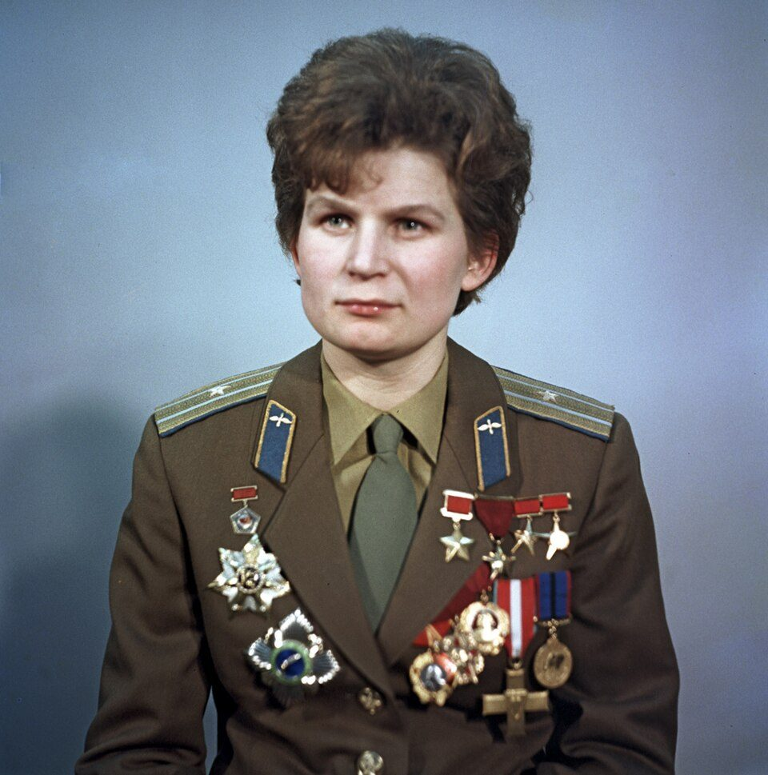

The space race
The rivalry between the Soviet Union and the United States that produced the first satellite, the first human in space and, in the end, the Moon landing.


After the Second World War the Soviet Union and the United States competed for supremacy in everything, and space became the great showcase. Rockets that could put a satellite in orbit could also carry a bomb to the other side of the world, so the race was as military as it was scientific.
Sputnik: the beep that changed the world
On 4 October 1957 the USSR launched Sputnik 1, a 58 cm, 83 kg aluminium sphere with four antennas. It only sent out a radio "beep-beep", but any radio amateur in the world could hear it. In the United States it caused genuine panic. A month later Sputnik 2 carried the dog Laika, the first animal in orbit, who died within hours from the heat.
The first humans
| Date | Milestone |
|---|---|
| 12 April 1961 | Yuri Gagarin (USSR) circles the Earth in 108 minutes |
| 5 May 1961 | Alan Shepard, first American in space (15-minute flight) |
| 20 February 1962 | John Glenn, first American in orbit |
| 16 June 1963 | Valentina Tereshkova, first woman in space |
| 18 March 1965 | Alexei Leonov makes the first spacewalk |
| 1965–1966 | Gemini missions rehearse dockings and long stays |

_-_Restoration.jpg){kind=link}
The minds in the shadows
Behind the Soviet programme was Sergei Korolev, the "chief designer", whose name was a state secret until his death in 1966. On the American side the leading figure was Wernher von Braun, the German engineer who had designed the V2 rockets for the Nazis and went on to build the giant Saturn V. And many trajectory calculations were done by hand by mathematicians such as Katherine Johnson, whom John Glenn personally asked to check the computer's figures before his flight.


The Moon as the goal
In 1961, after Gagarin's flight, President John F. Kennedy announced that the United States would land a man on the Moon before the end of the decade. It did so with the Apollo programme in 1969. The USSR secretly developed its own Moon rocket, the N1, but all four launches failed.
From rivals to partners
In 1975 an Apollo and a Soyuz spacecraft docked in orbit and their crews shook hands: the symbolic end of the race. Today Russians and Americans live side by side on the International Space Station.
Videos to understand it better
- Who won the space race? - Jeff SteersTED-Ed · 1.8M views
- Air Travel and The Space Race: Crash Course History of Science #37CrashCourse · 292K views
Videos are from YouTube and belong to their creators. They only load when you click them. See all videos →